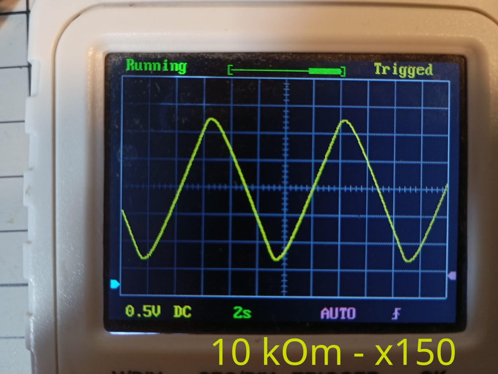
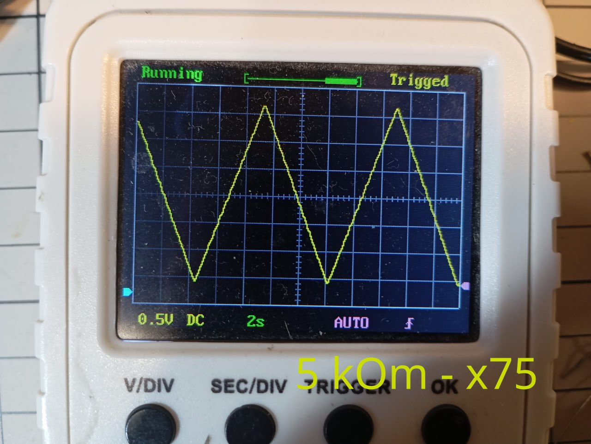
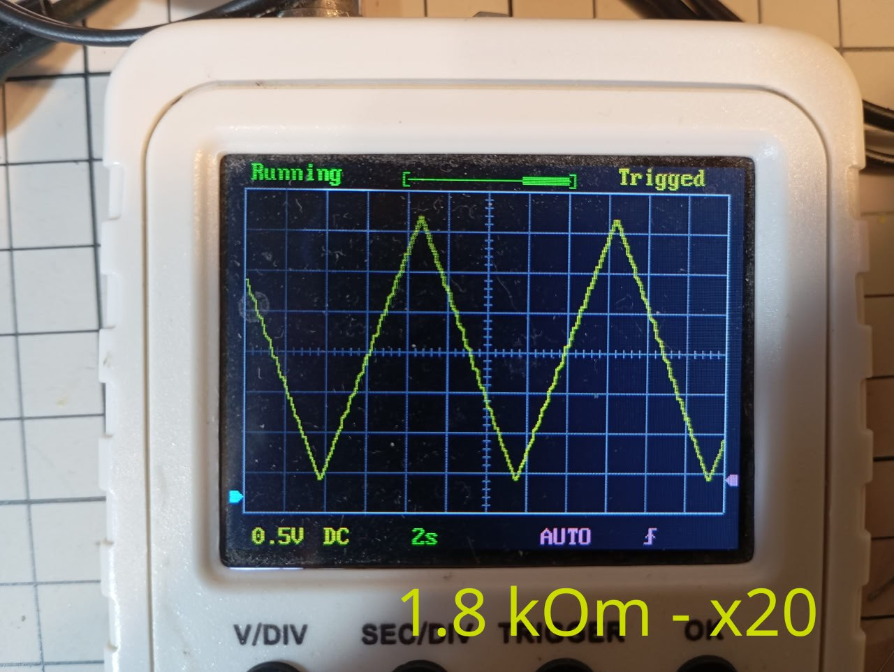
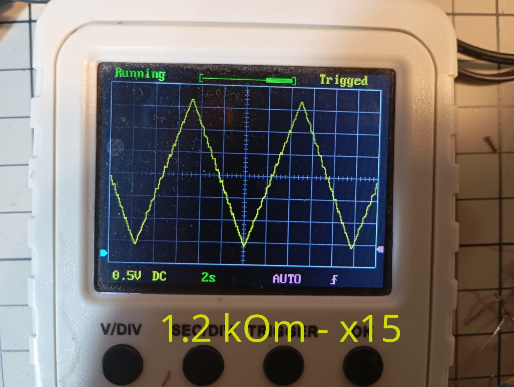
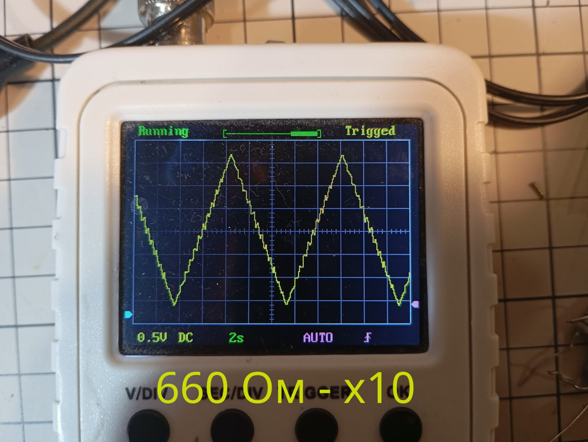
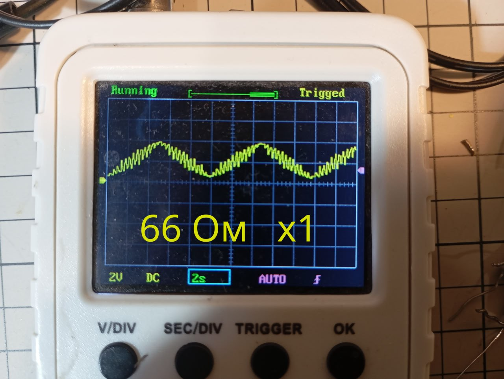

2025-05-30
10:53
https://habr.com/ru/companies/selectel/articles/721558/
Суть частотного фильтра - это делитель напряжения, в котором сопротивление одного из плеч зависит от частоты.
В RC фильтре это сопротивление конденсатора = 1 / (2 * pi * f * C)
В LC фильтре это сопротивление катушки индуктивности = 2 * pi * f * L
В зависимости от того с какого из плеч снимаем напряжение - будем фильтровать низкие или высокие частоты
#electronics
23:21
https://dzen.ru/b/aAnY608UST3RVlE7
Про фильтры. В прошлый раз когда искал как преобразовать ШИМ сигнал в постоянный мне как раз попался на одном из форумов совет про RC фильтр. Я сделал как написано - все заработало. Теперь еще раз то же самое, но с минимальными знаниями по теме.
Есть стандартный ардуиновский ШИМ сигнал (https://gist.github.com/bakineugene/7bd84e991f221386652f8f96d734dd04) Его частота = 490 Гц.
Нужно оставить только постоянную часть. Образуем делитель из конденсатора и резистора. Конденсатор 10 мкФ, а резистор нужно подобрать таким образом, чтобы сопротивление на конденсаторе было много меньше чем на резисторе.
Т.е. чтобы вся переменная часть рассеивалась на резисторе.
Вопрос только - много меньше, это сколько?
Провел небольшой эксперимент. Чтобы получить примерно представление что к чему. При x20 - рябь еще видна При x75 - Практически ровный график При x150 - фильтр уже не успевает реагировать вовремя на изменение сигнала
#electronics #smart_dcdc Video: videos/pwm_3.mp4
23:21

23:21

23:21

23:21

23:21

23:21
